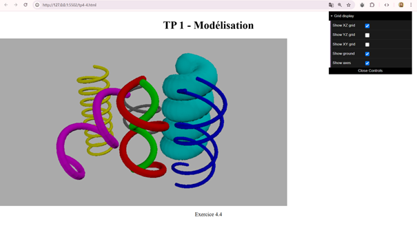

Aperçu du projet

Description du projet
Recréation en 3D de la célèbre chambre de Van Gogh à Arles en utilisant WebGL et JavaScript. Ce projet d'infographie permet une exploration interactive de l'espace, avec navigation à la souris, éclairage dynamique et console intégrée pour modifier les paramètres d'affichage.
L'objectif était, après avoir réalisé des TP pour s'entraîner, de reproduire fidèlement l'atmosphère et les proportions de la chambre telle que peinte par Van Gogh, tout en proposant une expérience immersive moderne grâce aux technologies web 3D.
Technologies utilisées
Fonctionnalités développées
- Modélisation 3D complète de la chambre (meubles, objets, textures)
- Navigation interactive à la souris (rotation de la caméra)
- Système d'éclairage dynamique avec ombres
- Console intégrée pour ajuster les paramètres d'affichage
- Grille d'affichage configurable
- Textures appliquées aux différents éléments
- Interface responsive
Défis techniques rencontrés
- WebGL : Apprentissage des shaders et de la programmation 3D en temps réel
- Modélisation : Création des formes 3D et gestion des vertices
- Éclairage : Implémentation d'un système d'éclairage réaliste
- Performance : Optimisation du rendu pour maintenir un framerate fluide
- Interaction : Gestion des événements souris pour la navigation 3D
Compétences développées
Programmation 3D
WebGL, shaders GLSL, matrices de transformation
Mathématiques 3D
Géométrie vectorielle, projections, rotations
Infographie
Modélisation, texturing, éclairage
Optimisation
Performance graphique, gestion mémoire
Apprentissages artistiques
Ce projet m'a également permis d'approfondir ma connaissance de l'œuvre de Van Gogh, particulièrement sa période d'Arles. J'ai dû étudier attentivement les peintures de la chambre pour reproduire fidèlement les couleurs, les proportions et l'ambiance unique de cet espace si personnel à l'artiste.